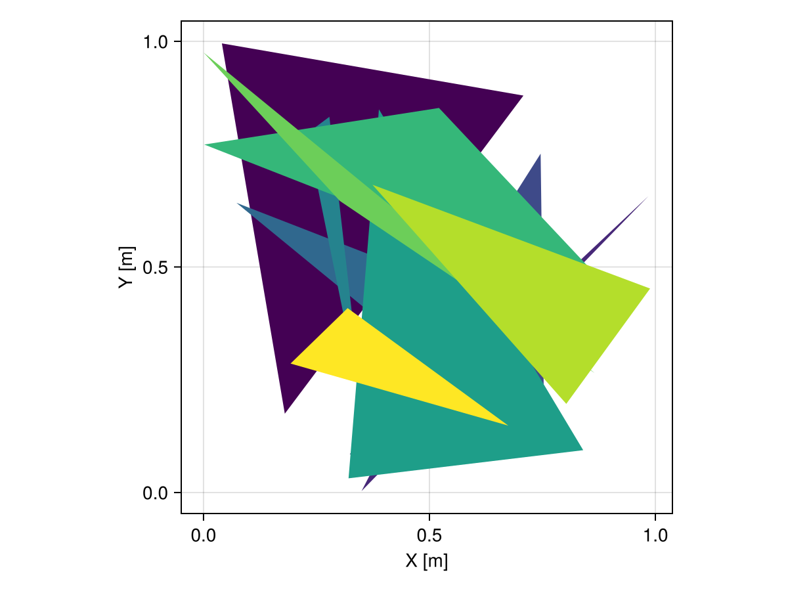
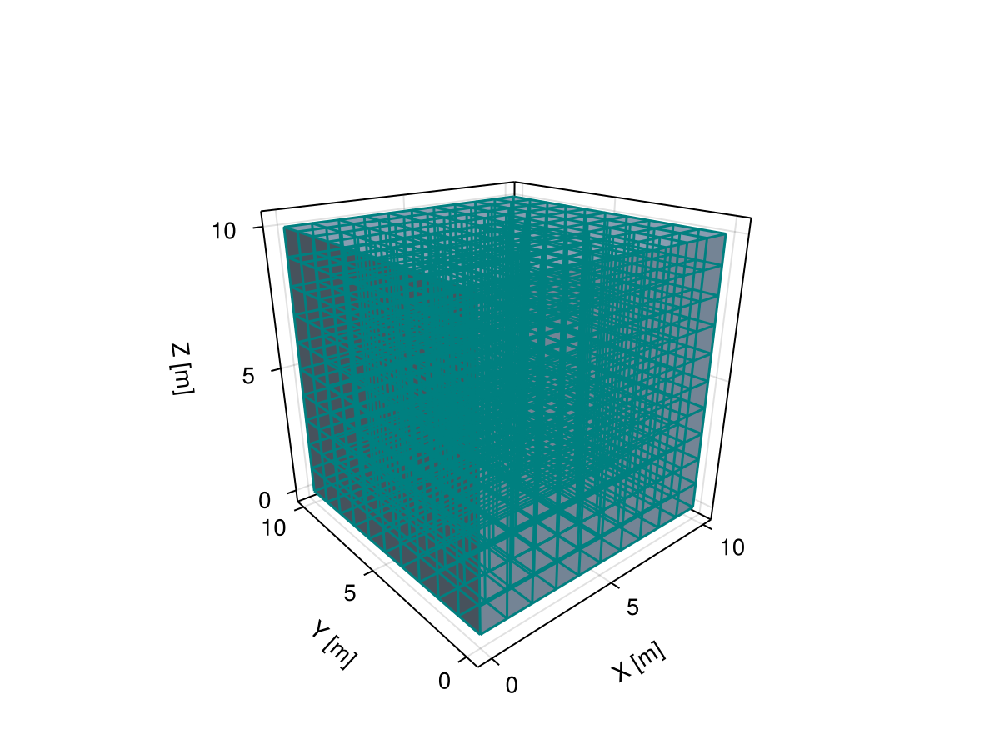

Visualization
The package exports a single viz command that can be used to add objects to the scene with a consistent set of options.
Meshes.viz — Function
viz(object; [options])Visualize Meshes.jl object (e.g., mesh, geometry) with options such as color and alpha values for transparency. All available options will be documented below upon loading a Makie.jl backend.
Examples
Different coloring methods (vertex vs. element):
# vertex coloring (i.e. linear interpolation)
viz(mesh, color = 1:nvertices(mesh))
# element coloring (i.e. discrete colors)
viz(mesh, color = 1:nelements(mesh))Different strategies to show the boundary of geometries (showsegments vs. boundary):
# visualize boundary with showsegments
viz(polygon, showsegments = true)
# visualize boundary with separate call
viz(polygon)
viz!(boundary(polygon))Notes
This function will only work in the presence of a Makie.jl backend via package extensions in Julia v1.9 or later versions of the language.
Values passed to the color option can be of any type, as long as they can be converted to colors by the colorfy function from the Colorfy.jl package.
For Mesh subtypes, the length of the vector of colors determines if the colors should be assigned to vertices or to elements.
VizPlot type
The plot type alias for the viz function is Viz.
Attributes
alpha = 1.0 — scalar or vector of transparency values in [0, 1]
color = :slategray3 — scalar or vector of colors for geometries
colormap = :viridis — color scheme (a.k.a. map) from ColorSchemes.jl
colorrange = :extrema — minimum and maximum color values or symbol
pointcolor = :gray30 — color of points
pointmarker = :circle — marker of points
pointsize = 4 — size of points
segmentcolor = :gray30 — color of segments
segmentsize = 1.5 — width of segments
showpoints = false — visualize points
showsegments = false — visualize segments
Meshes.viz! — Function
viz!(object; [options])Visualize Meshes.jl object (e.g., mesh, geometry) in an existing scene with options forwarded to viz.
viz! is the mutating variant of plotting function viz. Check the docstring for viz for further information.
Geometries
We can visualize a single geometry or multiple geometries in a vector:
triangles = rand(Triangle, 10, crs=Cartesian2D)
viz(triangles, color = 1:10)
Domains
Alternatively, we can visualize domains with topological information such as Mesh and show facets efficiently:
grid = CartesianGrid(10, 10, 10)
viz(grid, showsegments = true, segmentcolor = :teal)